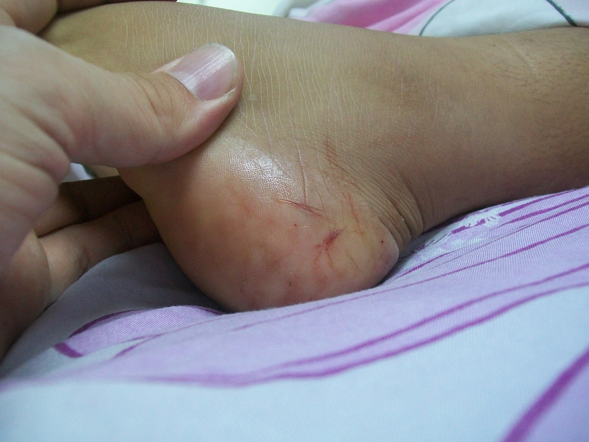

World health organization 2022
ake bite is a neglected public health issue in many tropical and subtropical countries. About 5.4 million snake bites occur each year, resulting in 1.8 to 2.7 million cases of envenoming (poisoning from snake bites). There are between 81 410 and 137 880 deaths and around three times as many amputations and other permanent disabilities each year.
Most of these occur in Africa, Asia and Latin America. In Asia up to 2 million people are envenomed by snakes each year, while in Africa there are an estimated 435 000 to 580 000 snake bites annually that need treatment. Envenoming affects women, children and farmers in poor rural communities in low- and middle-income countries. The highest burden occurs in countries where health systems are weakest and medical resources sparse.
Bites by venomous snakes can cause acute medical emergencies involving severe paralysis that may prevent breathing, cause bleeding disorders that can lead to fatal haemorrhage, cause irreversible kidney failure and severe local tissue destruction that can cause permanent disability and limb amputation. Children may suffer more severe effects, and can experience the effects more quickly than adults due to their smaller body mass.
In contrast to many other serious health conditions, a highly effective treatment exists. Most deaths and serious consequences of snake bites are entirely preventable by making safe and effective antivenoms more widely available and accessible. High quality snake antivenom are the most effective treatment to prevent or reverse most of the venomous effects of snake bites. They are included in the WHO List of essential medicines and should be part of any primary health care package where snake bites occur.
Key facts To know about the Bites